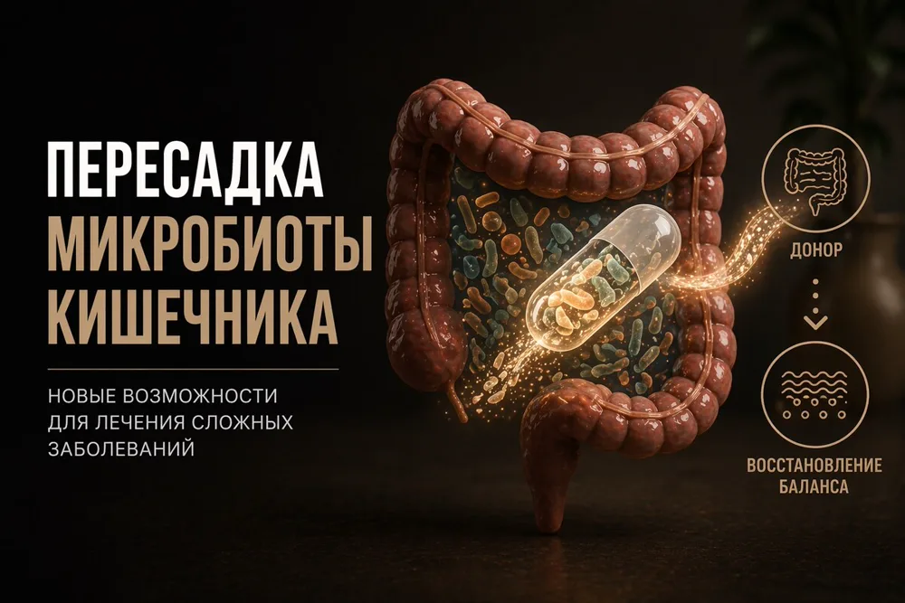

Пересадка кала: что такое ФМТ и кому помогает

Человек годами лечится от кишечной инфекции. Антибиотики помогают на время, но через пару недель всё возвращается. Для таких пациентов есть процедура, которая работает в 80–95% случаев.
Что такое ФМТ
Это трансплантация фекальной микробиоты. Пересаживается не сам кал, а экосистема из сотен видов бактерий, их метаболитов и вирусов. Здоровая микробиота защищает кишечник от патогенов, синтезирует витамины, регулирует иммунитет и влияет на мозг через ось «кишечник — мозг».
ФМТ и пробиотики — не одно и то же. Пробиотики содержат один или несколько штаммов, а ФМТ доставляет сотни видов в естественном симбиозе. Это не добавка, а замена микробной экосистемы.
Где работает
Главное показание — рецидивирующая инфекция Clostridioides difficile. После двух рецидивов ФМТ признана терапией первой линии, эффективность достигает 90% в зависимости от способа доставки.
Антибиотики убивают C. difficile, но подавляют нормальную микробиоту и создают условия для нового рецидива. ФМТ разрывает этот круг, восстанавливая защитную функцию кишечника.
В следующих статьях — работает ли ФМТ при СРК, язвенном колите и ожирении.
Ваш врач Гондусов Д.В. 

Статья носит информационный характер и не заменяет консультацию врача. Не занимайтесь самодиагностикой.